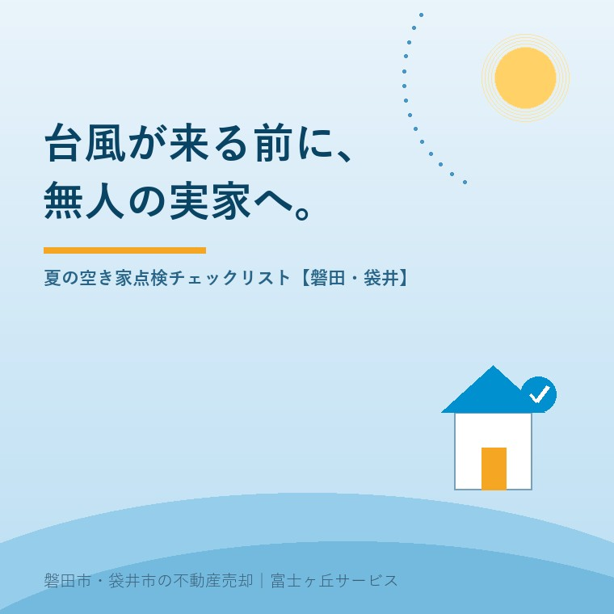

2026年7月30日｜カテゴリ：空き家管理・防災・実家じまい

この記事の要点
Q. 親が施設に入って実家が無人に。台風が来る前に、何をしておけばいい？
A. ポイントは「飛ばされない・入られない・すぐ気づける」の3つです。瓦・雨どい・雨戸・庭木・物置まわりの外まわり点検と、ブレーカー・郵便物・近隣連絡先の整備を、台風の接近・上陸がピークになる8〜9月の前に済ませておきましょう。磐田市・袋井市では、介護施設の運営から不動産事業を始めた富士ヶ丘サービスのような「介護×不動産」専門の会社に、空き家の管理から今後の方針まで相談するという選択肢があります。
気象庁の平年値では、日本への台風の接近・上陸は8月から9月にかけてがピークです。つまり、7月末の今は「準備に間に合う最後の時期」。人が住んでいる家なら台風前に雨戸を閉め、飛びそうな物を片付けますが、無人になった実家では誰もそれをしてくれません。今日は、親御さんの施設入居などで空き家になった実家の台風前点検を、現場でお伝えしているチェックリスト形式でまとめます。この夏に書いてきた保険・越境・解体の各記事とあわせて、「夏の空き家対策」の総仕上げです。
だからこそ、無人の家は「台風が来てから」ではなく「来る前」がすべてです。次のリストを持って、週末に一度実家へ行ってみてください。
| 場所 | 確認すること |
|---|---|
| 屋根・瓦 | ずれ・浮き・ひびがないか、地上から双眼鏡やスマホのズームで確認（屋根に登らない。異常があれば業者へ） |
| 雨どい | 落ち葉・土の詰まりを除去。詰まったままだと大雨で外壁・基礎を傷める |
| 雨戸・シャッター | すべて閉めて施錠。ガラスの飛散防止と防犯を兼ねる |
| 庭木 | 伸びた枝の剪定（隣へ越境しそうな枝は優先。越境の記事参照）。ひょろ高い木は支柱や伐採も検討 |
| 飛びそうな物 | 植木鉢・すだれ・物干し竿・バケツ・自転車は屋内や物置へ。物置自体の扉の施錠と傷みも確認 |
| アンテナ・カーポート | ぐらつき・さびを確認。使わないテレビアンテナは撤去してしまうのも手 |
| ブロック塀 | ぐらつき・ひび。通学路に面していれば特に優先度高 |
| 項目 | 確認すること |
|---|---|
| 雨漏りの痕跡 | 天井・押し入れのシミ、カビ臭。見つけたら台風前に応急処置を業者へ |
| 電気 | 冷蔵庫等を使っていなければブレーカーを落とす（漏電・通電火災の予防） |
| 水道 | 長期不在なら元栓を閉める。たまの通水で排水トラップの封水も補充（悪臭・虫の逆流防止） |
| 戸締まり | 全窓・勝手口の施錠。合鍵の保管場所を家族で共有 |
| 郵便物 | 郵便局の転居・転送サービスで家族の住所へ転送。ポストに郵便物があふれた家は「無人」と一目で分かり、防犯上も危険 |
| 貴重品・書類 | 権利証・契約書・通帳類は実家に置かず持ち出しておく（捨ててはいけない書類の記事参照） |
点検と同じくらい大切なのが、台風の後に「何かあったら知らせてもらえる」体制です。
天竜川・太田川水系を抱えるこの地域では、台風と大雨への備えは毎年の宿題です（お住まいの場所の浸水想定は最新ハザードマップの記事で確認を）。そして、毎年この点検を続けるうちに、多くのご家族がふと気づきます──「この労力と費用、いつまで続けるんだろう」と。
台風前の点検は、実家の状態を家族で直視するいい機会でもあります。雨漏りが始まっていないか、庭の手入れは追いつくか、あと何年この家は持つか。「管理を続ける」「貸す」「売る」「壊す」の分かれ道は、家がまだ元気なうちほど選択肢が多く残っています。点検のついでに、写真を数枚撮って家族で共有するところから始めてみてください。
富士ヶ丘サービスは、磐田市・袋井市に特化した地域密着の会社として、施設入居で空き家になった実家の管理のご相談から、「貸す・売る・壊す」の出口の検討まで、介護と不動産をひとつのテーブルでお手伝いしています。実家じまい相談室もあわせてご利用ください。
ふじがおか実家カルテ｜「いつまで管理を続けるか」の判断材料に
建物の状態・維持費・売りやすさ。台風シーズンの前に、まず1冊に。
登記情報と固定資産税通知書から、名義・道路・建物の状況を宅建士が机上で確認し、管理を続けた場合の費用感と出口の選択肢を整理してお渡しします。遠方の方もオンライン・郵送で完結できます。
本記事は2026年7月30日時点の情報をもとに作成しています。屋根の点検・修繕は危険を伴うため、高所の作業は必ず専門業者へご依頼ください。保険の個別の契約内容はご契約の保険会社・代理店へご確認ください。

この記事を書いた人：大石浩之（宅地建物取引士）
磐田市・袋井市で「介護×相続×空き家」に特化した不動産売却支援を行う富士ヶ丘サービスの代表取締役・宅地建物取引士。介護施設の運営から不動産事業を始めた経験をもとに、売主とご家族が困らない売却を一件ずつお手伝いしています。プロフィール
磐田市・袋井市の実家じまい・相続空き家相談
固定資産税通知書だけでも相談できます
住所があいまいでも、通知書や写真から名義・道路・農地・残置物の確認順を整理します。カルテ申込またはLINEで状況を送ってください。
富士ヶ丘サービス株式会社／静岡県磐田市見付5789番地1／TEL:0538-31-3308／静岡県知事 (2) 第14083号／代表取締役・宅地建物取引士 大石 浩之